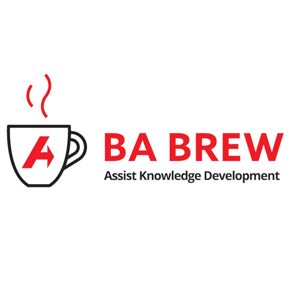
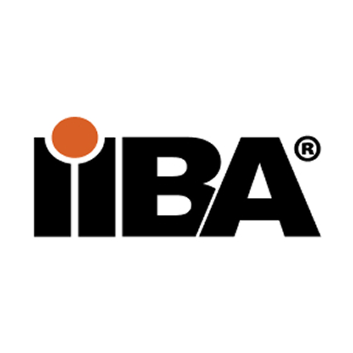
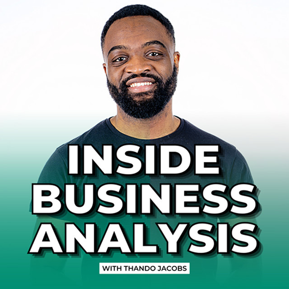
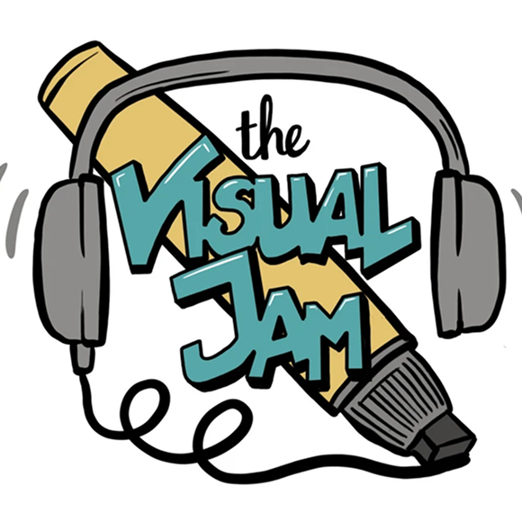
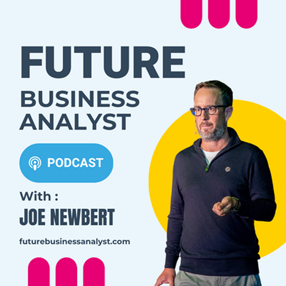

Podcasts
-

BA Brew
AssistKD’s BA Brew podcast is where our Brew crew and special guests talk all things Business Analysis.
BA Brew -

Business Analysis Live!
Business Analysis Live! is a biweekly podcast and live series hosted by the International Institute of Business Analysis (IIBA). It features industry experts breaking down hot topics.
Business Analysis Live! -

Inside Business Analysis
Thando Jacobs’ goal is simple: to provide you with practical insights, tips, and resources that actually make sense.
Inside Business Analysis -

The Visual Jam
The Visual Jam is an interactive global community and visual thinking initiative. Operating as a live meetup series and video archive rather than a traditional audio podcast, it covers sketch-noting, creative problem-solving and visual business communication.
The Visual Jam -

Future Business Analyst
The Future Business Analyst Podcast is currently on hiatus, though all of its previous episodes remain available for streaming and listening.
Future Business Analyst
Become a member
Join our growing network of young business analysts shaping the future of the industry.
Join for free